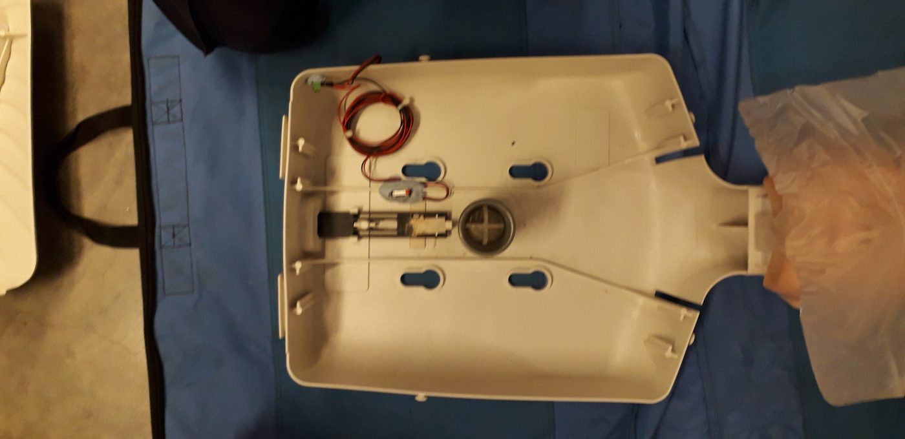
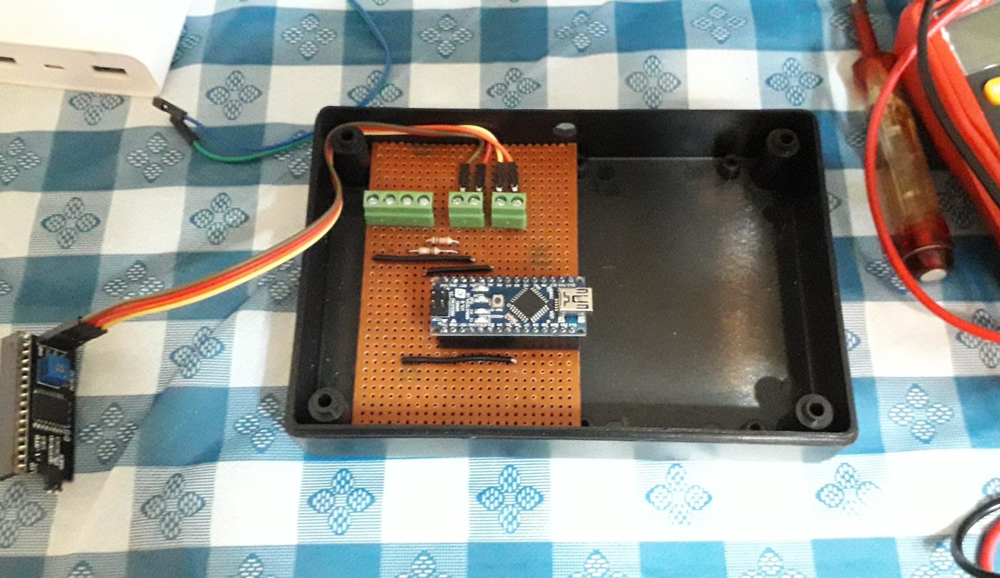
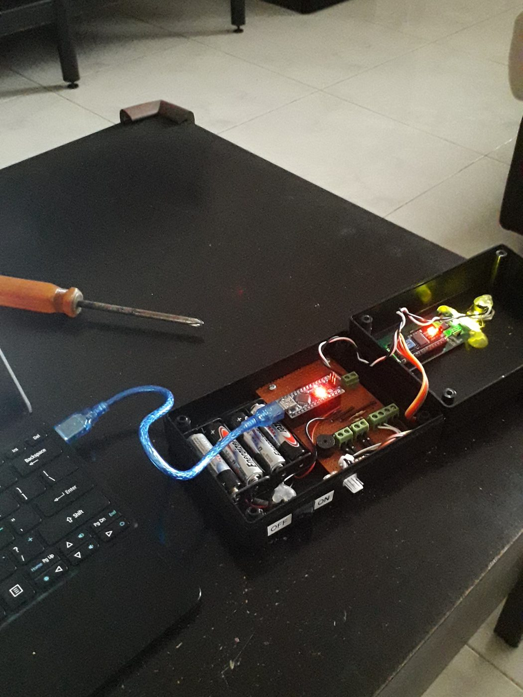

Why I built it
With my peers, I helped plan first aid training for secondary school students. CPR was the hard part to teach. Good CPR depends on pushing deep enough and keeping a steady pace of 100 to 120 compressions a minute, but as instructors we had no real way to measure a student’s pace. We were counting and guessing.
Meanwhile, the competitions the students trained for used an off-the-shelf CPR feedback tool. If that was how they’d be judged, they needed to practise with something similar. We didn’t have one, so I decided to build one.
Version 1: listening for the click
Our training dummy already did half the job: it gives a click when a compression reaches about the right depth. So I didn’t need to measure depth at all. I just needed to catch the click.
I started on a breadboard with an Arduino and a micro switch, positioned the switch inside the dummy so the chest plate presses it at that same depth, and hot-glued it in place. The Arduino counts each press. After 30 presses, one CPR cycle, it takes the time since the first press and works out the rate in compressions per minute (BPM).

It worked. Here it is counting a full cycle (sound removed, subtitles added):
Checking my maths
Looking at the code again years later, the formula has two small bugs:
// what the kit ran
totalTime = (timeEnd - timeBegin) / 1000; // whole seconds only
BPM = (30.0 / totalTime) * 60.0; // 30 presses- The time is rounded down to whole seconds.
timeEnd - timeBeginis a whole number of milliseconds, so dividing by1000throws away the fraction before it ever reaches the decimal variable. 16.5 seconds becomes 16. - 30 presses are only 29 gaps. The clock starts on press 1 and stops on press 30, so the time covers 29 intervals, not 30.
Both errors push the number up. In the demo, the presses span 16.5 seconds, which is really 105 BPM. The kit rounded that to 16 seconds and divided 30 into it, and showed 112. Both are inside the 100–120 target, so the feedback was right, but the number was a few percent high. The fix is one line:
BPM = 29.0 * 60000.0 / (timeEnd - timeBegin); // 29 gaps, time in exact millisecondsThe force sensor that didn’t survive
The click only tells you a press was deep enough. I wanted to know how hard each press was too, so I tried a square force-sensitive resistor (FSR) under the chest plate, with the LCD showing “good” for a hard enough push.
I broke two of them in a single training session. Only then did I check properly and realise they’re designed for far less force than a real chest compression. I took the force sensor out and went back to the click.
From breadboard to box
Once the click version worked, I moved it off the breadboard: an Arduino Nano soldered onto stripboard, screw terminals for the wires to the dummy, a 16×2 LCD in the lid, a buzzer, and four AA batteries so it didn’t need a laptop.


- LCD: shows “Begin CPR”, then the count as you press, then the BPM and cycle number after every 30.
- Buzzer: sounds when a cycle’s rate falls outside 100–120.
- Reset button: starts again for the next student.
Later I tried a Bluetooth version that sent the count, cycle and BPM to a PC app I wrote in Processing, with big numbers for a class to watch and a cycle limit an instructor could set. I also designed a 3D-printable case for it.
Built on an allowance
I put it together in a few weeks, mostly at night: learning, coding and wiring after school. The sensors came out of my own allowance, and everything else came from what I could find and borrow in the lab. It’s where I learned to solder and put my electronics lessons to real use.
The timeline was short. I was balancing school, this project and planning the first aid training with my peers, all at once.
Why it stopped
The project ended for a good reason. The first aid course started training with smart CPR dummies, and that kind of equipment became much easier to get. The problem I built it for had been solved properly.
Looking back
I laugh at how ugly it is. Hot glue, a project box and wires everywhere. But it did the job it was built for, with what I had. If I built it again, I would:
- Use an ESP32 and pair it with a phone. Built-in Bluetooth and Wi-Fi, and every student’s phone becomes the display.
- Use a proper sensor, made for the force involved. And check its rating before a training session, not after breaking two.
- Spend more time on the hardware design. For example, a linear sensor inside the dummy’s spring, which slides as the chest is pressed and returns as it’s released. That measures real depth on every compression, not just a click at one point.
- Fix the BPM maths above, and test the numbers against a stopwatch.